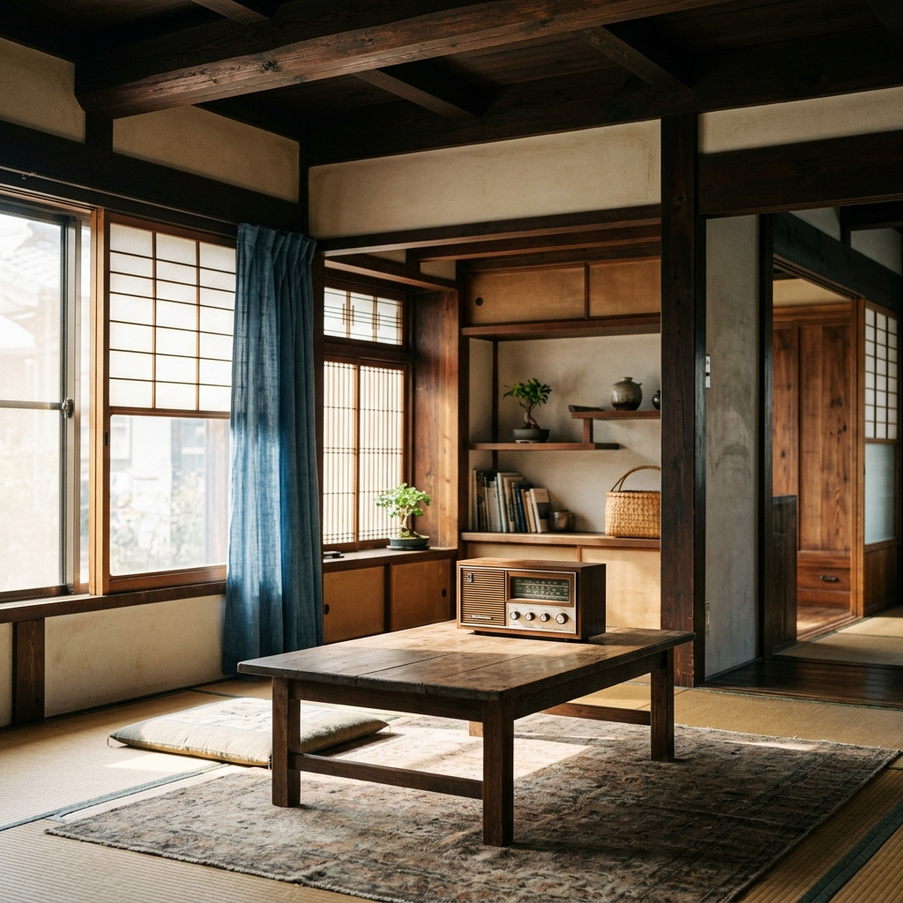

寄り添う、温かいラジオ。
自ら手を動かす「実動型」設計室。
空き家に新しい周波数を合わせるように。
図面を描くだけでなく、実際の現場作業から小さなお困りごとの修繕まで。
あなたの想いに一貫して寄り添い、これからの心地よい居場所をともにつくります。
Concept
波長を合わせて、空間をチューニングする。
設計室ラジオは、図面を描いて終えるだけの設計事務所ではありません。
自ら現場に立ち、手を動かして空き家を再生する「DIY実動型設計室」です。
作業中、いつも傍らで流れているラジオのように。
決して主張しすぎず、でも常に寄り添い、
そこにあるだけで心地よい空間を作ってくれる。
私たちの空間づくりも、そんな自然で温かな存在でありたいと考えています。
使われなくなった空き家から、住まいの小さなお困りごとの修繕まで。
あなたと建物の「ちょうどいい周波数」を探りながら、
居心地の良い場所を一緒につくりあげます。
Diagnosis
あなたの空き家、どう活かす？
いくつか質問に答えるだけで、あなたの空き家にぴったりな活用アイデアを提案します。
Service
提供していること
空き家リノベーション設計
住宅、店舗、コミュニティスペースなど、建物の歴史を活かしながら現代のライフスタイルに合わせた空間を設計します。
活用企画・コンサルティング
「どう使えばいいかわからない」という段階からご相談ください。地域ニーズや予算に合わせた事業計画を一緒に考えます。
補助金活用サポート
空き家活用に使える国や自治体の補助金・助成金の調査から申請サポートまで、伴走しながら行います。
住まいの便利屋・各種修繕
有資格の専門工事から日常の「困った」まで、スピーディーに対応します。
checkガスコンロの入替・修理
作業料の目安: 10,000円〜20,000円 （※機器・部品代は別途）
check給湯器（石油・ガス）の取付・入替・修理
作業料の目安: 25,000円〜45,000円 （※機器代別途）
check暖房機（ファンヒーター、FF等）の取付・入替・修理
作業料の目安: 15,000円〜25,000円 （※機器代別途）
checkエアコンの入替
作業料の目安: 15,000円〜25,000円 （標準工事の場合。機器代別途）
check水栓の交換・修理
作業料の目安: 8,000円〜15,000円 （※部品代別途）
checkトイレの交換
作業料の目安: 25,000円〜40,000円 （内装工事を含まない場合。便器処分費等含む）
check照明器具の交換
作業料の目安: 3,000円〜8,000円 （※機器代別途）
check簡単な電気工事（コンセント移設・増設）
作業料の目安: 6,000円〜15,000円
check給水配管の修理
作業料の目安: 8,000円〜20,000円 （※状況・部品代により変動）
check家具の移動・解体・処分
作業料の目安: 1時間あたり 約3,000〜5,000円 （※処分費別途）
check庭木の剪定・枝切り
作業料の目安: 1本 3,000円〜 （または半日15,000円ほど）
checkエアコンクリーニング
作業料の目安: 1台 10,000円〜14,000円
checkレンジフードの取付・入替・クリーニング
作業料の目安: 12,000円〜25,000円
infoなどなど...何でもご相談ください！
現地調査・お見積もりは無料です！ まずはお気軽にお問い合わせください。
Profile
設計室ラジオについて
代表: 斎藤 友平
1989年生まれ。新潟大学で建築を学んだ後、設計事務所・ガス会社（都市ガス・LPガス両方）などに勤務。地方の空き家問題に関心を持ち、本業である生活サービス業と並行して活動中。「建物を壊さず、物語を引き継ぐ」をモットーに活動中。
住まいのなんでも対応を始め、時間があればDIYで空き家を再生。フットワークの軽さとレスポンスの速さが強みです。
Contact
お便り・ご相談
ラジオ番組へのお便りのように、お気軽にご相談ください。